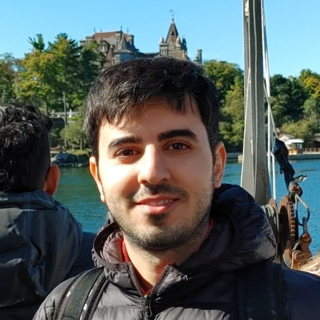

Mehran Shakerinava

Mehran Shakerinava
Email: mehranshakerinava (at) gmail.com / mehran.shakerinava (at) mail.mcgill.ca
Affiliation: School of Computer Science, McGill University, Montreal, Canada
CV
I am a 4th year PhD candidate at McGill University and Mila, supervised by Prof. Siamak Ravanbakhsh.
My research lies at the intersection of machine learning, optimization, and geometry, with a focus on theoretical foundations
and practical applications of symmetry in learning algorithms.
Prior to McGill, I received a Bachelor's degree in computer engineering from Sharif University of Technology in Iran.
If you'd like to discuss research, potential collaboration, or just connect, feel free to email me.
Research Interests
- Design and analysis of machine learning algorithms
- Symmetry and geometry in machine learning and optimization
- Statistical learning theory and theoretical foundations
- Utility theory and reinforcement learning
Publications
-
Weight-Sharing Regularization
Mehran Shakerinava*, Motahareh Sohrabi*, Siamak Ravanbakhsh, and Simon Lacoste-Julien
AISTATS 2024
[paper]
[arXiv]
[code]
-
Structuring Representations Using Geometric Invariants
Mehran Shakerinava*, Arnab K. Mondal*, and Siamak Ravanbakhsh
NeurIPS 2022
[paper]
-
Utility Theory for Sequential Decision Making
Mehran Shakerinava, and Siamak Ravanbakhsh
ICML 2022
[paper]
[arXiv]
-
Equivariant Networks for Pixelized Spheres
Mehran Shakerinava, and Siamak Ravanbakhsh
ICML 2021
[paper]
[arXiv]
[code]
Older Publications
-
Harnessing Pairwise-Correlating Data Prefetching With Runahead Metadata
Fatemeh Golshan, Mohammad Bakhshalipour, Mehran Shakerinava, Ali Ansari, Pejman Lotfi-Kamran, Hamid Sarbazi-Azad
Computer Architecture Letters (CAL) 2020
[paper]
-
Bingo Spatial Data Prefetcher
Mohammad Bakhshalipour, Mehran Shakerinava, Pejman Lotfi-Kamran, and Hamid Sarbazi-Azad
International Symposium on High-Performance Computer Architecture (HPCA) 2019
[paper]
[code]
Preprints
-
Newman's Theorem via Carathéodory
Yaqiao Li, Ali Mohammad Lavasani, Mehran Shakerinava
arXiv preprint 2024
[arXiv]
This page has been accessed
 times since Dec, 2024.
times since Dec, 2024.